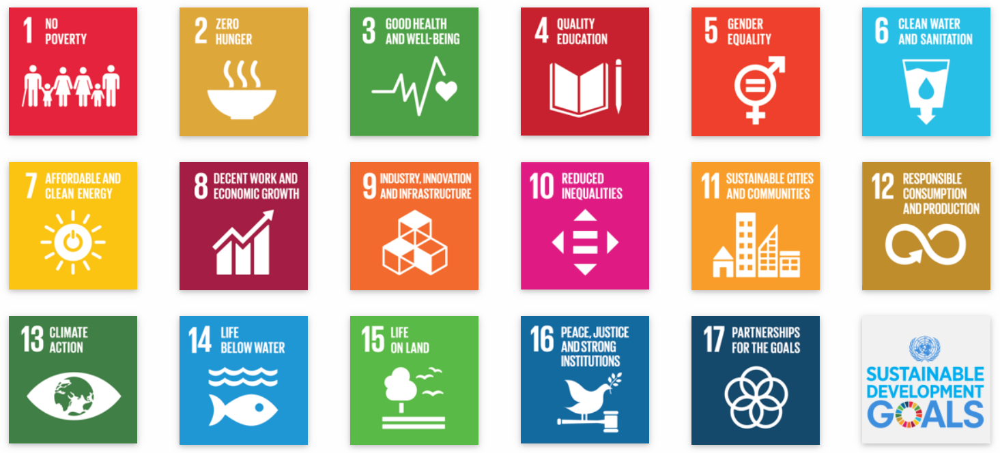

Sustainable Development
About Sustainable Development
Sustainable development is the practice of meeting the needs of the present without compromising the ability of future generations to meet their own needs. It is a holistic approach that balances economic, social, and environmental concerns.
 Top
Top
Sustainable Development Goals
The Sustainable Development Goals (SDGs) are a universal call to action to end poverty, protect the planet and ensure that all people enjoy peace and prosperity by 2030. There are 17 SDGs in total, each with specific targets to achieve. We have chosen SDG Number 4 i.e Quality education.

Goal 4: Quality Education
Ensure inclusive and equitable quality education and promote lifelong learning opportunities for all.
Sustainable Development Goal 4, focuses on ensuring inclusive and equitable quality education. It is deeply linked to wellbeing. Education is one of the most essential determinants of human wellbeing as it has a great impact on individuals' social, economic, and physical wellbeing.
Access to quality education can provide us with the knowledge and skills necessary to make informed decisions about our wellbeing, leading to better living. Education can also provide individuals with the skills needed to access decent work, leading to improved wellbeing.
Education can contribute to reducing poverty and inequality, which are both significant threats to wellbeing. When individuals have access to quality education, they are more likely to secure better-paying jobs, access healthcare services, and live in better environments, leading to better living standards and improved wellbeing.
We feel SDG 4 plays a crucial role in promoting wellbeing by providing individuals with access to quality education. This, in turn, can lead to better health outcomes, increased economic security, reduced poverty and inequality, improved living standards, and enhanced social and emotional wellbeing.
UN Infographic Source-UNSTATS
TopAbout This Website
This website is designed with the aim of not only participating in this competition but also to raise awareness about the ever growing need for sustainable development.
We believe that sustainable development is the key to ensuring that the world's resources are used in a responsible and equitable manner, so that they are available for future generations. Our website is designed to showcase our views on SDG number 4.
 Top
Top
Contact Us
Feedback? Feel free to get in touch:
Email: cl12.jonathan@pm.me